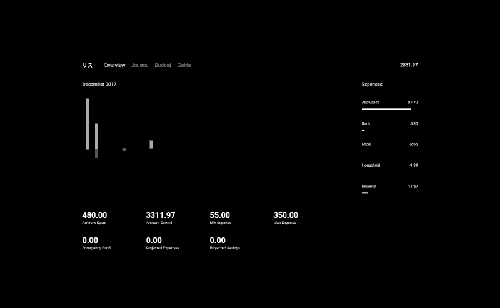
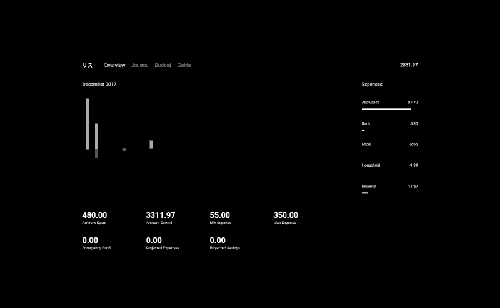

A personal finance management tool. Ironically, as soon as I started working on this project, I simply stopped spending and eventually didn't see the need for financial management.
7Y2 CA1 7.6 D6.5 V1.1
A personal finance management tool. Ironically, as soon as I started working on this project, I simply stopped spending and eventually didn't see the need for financial management.
